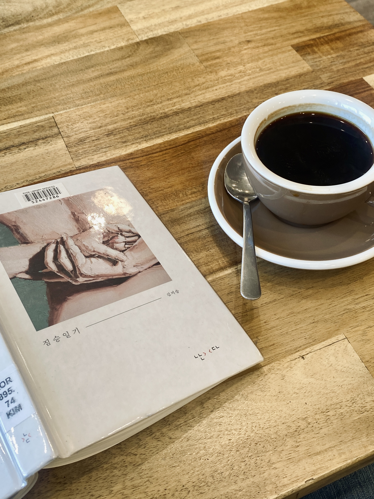

[독후감] 짐승일기
그런 책이 있다. 허겁지겁 활자를 좇으면서도 도무지 속도가 나지 않는. 이 책이 그렇다. 짧은 토막글을 서너편 연이어 읽다 보면 자연히 책을 덮고 먼 곳을 응시하게 된다. 바람에 흔들리는 나무나 초겨울 시리고 맑은 날의 눈부신 햇살을, 버스 차창 밖 노을을, 방구석 천장 모서리 한 곳을. 그만큼 밀도가 높아 그냥 책장을 넘기지 못한다는 의미겠지.
지난 수요일부터 하루 중 절반을 일해야 하는 공장에 나간다. 고작 3일 겪고 왔는데, 이 책을 읽는 마음이 사뭇 달라졌다. “여성, 글쓰기, 엄마, 몸과 질병, 나이듦, 소수자성”에 대해 써내려간 책이라는 소개글을 읽으며 나와 포개지는 지점을 짚어 보게 되는 것. 아무래도 꽤나 비껴 있다. 공장에서 일하는 이십여 명의 노동자 중 여성은 단 한 명이고, 그곳은 ‘건강한 몸’을 전제로 한다. 작가와 내가 서 있는 자리의 거리를 보여 주는 단적인 예지 않을까.
이전에 «술래 바꾸기»를 읽고 쓴 글에는 ‘내가 영영 체화하지 못할 지점‘이 있을 것이라 남겨 두었네. 그렇다면 이 책의 효용은 무엇인가. 겪지 못할 일에 대한 배움일까. 앞에서 큰따옴표로 묶은 저 말들을 읽고 배우는 데 그쳐야 할까. 아니, 나는 나에 관해 쓰기로 나아가게 만드는 것이 결국 이 책의 가장 큰 역할이라고 생각한다.
요 며칠 내 화두는 대선 결과였다. 언젠가부터 선거 이후에 ‘2030 남성’의 투표 결과를 두고 말이 많다. 그리고 언젠가부터, 또래 남성들과 내가 꽤나 비껴 있다고 생각한다(때론 친밀한 이들에게조차 거리감을 느끼기도 한다). 계속해서 ‘비껴 있다’라고 표현하는 건 그 무엇도 대립항이 아니라고 생각하기 때문이다. 여성과 남성, 아픈 몸과 건강한 몸 사이 무수한 사람이 있다고. 그저 서 있는 지점과 바라보는 지점의 차이지 않을까. 그렇다면 김지승 작가와 나와의 거리, 또래 남성들과 나의 거리는 무엇이 다르고, 각자가 바라보는 지점의 차이는 어디서 발생하는가. 그리고 접점은 무엇인가. 그것이 늘 나의 화두인데… 어쩌다 글이 이런식으로 흐르는지 좀체 알수가 없네.
쓰다 보니 독후감을 빙자한 하고 싶은 말 대잔치가 된 것 같아 부랴부랴 마무리하자면, 이한 활동가가 대선 후 남긴 글 속 ”여성들에게 ‘페미니즘’이 해석툴이 된 반면, 남성들에게는 그게 부재했다“라는 말에 크게 공감한다. 그렇다고 그게 약자에 대한 공격성 혹은 반대 정서로 흐르는 걸 좀체 이해할 수 없으면서도, 결국 그 부재의 지점을 들여다보는 게 필요하다고 생각한다. 바로 내가 쓰고 싶은 글이자 찾으려 갈망하는 글이 아닐까 싶고. 그리고 이렇게 나에 대해 돌아보고 쓰는 것이 이 책이 내게 던지는 가장 큰 의미이지 않을까 생각해 본다. 오독일지라도.
뒤표지에 쓰인 글—사람들이 모두 자기 이야기를 해요 / 좋은 일이죠 / 자기 이야기만 한다고요 / 아….. 그건 좋은 일이 아니네요—라는 말에 찔려 조금 덧붙이자면, 결국 좋은 이야기는 자신의 가장 내밀한 부분, 약한 부분을 꺼내 놓는 것이라고 생각한다. 책의 제서에서 힌트를 얻자면, 제 힘으로 울기는커녕 아직 제대로 울어본 적 없어 제 세계를 갖지 못한 게 아닐까. 우리는 언제 어디서 우는가. 거기에 실마리가 있다고 믿는다.

📚김지승, 짐승일기, 난다(2022.09.06. 출간)